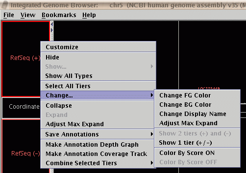

IGB 4.52 release notes.
Highlights:
IGB 4.52 adds minor enhancements and bugfixes relative to 4.50.
- Version 4.52
- The DAS/2
client has been improved for easier simultaneous viewing of data from
multiple DAS/2 servers, and to accept data in the GFF format, if the server
makes it available.
-
Fixes have been applied to allow loading of Affymetrix CHP format files
from exon array products containing scores for transcript clusters.
Affymetrix data formats are described in documents from the
Affymetrix
Developers Network.
-
IGB now allows coloring individual transcripts with individual colors
in data from
BED format files.
This requires extra computational overhead, so use with caution.
This setting is activated in the same way as described
for the UCSC genome browser:
- Include itemRgb="On" in the
track line
- Set colors in the 9th column in each bed file data line in the
format RRR,GGG,BBB, such as "128,0,255".
-
The track-line property graphType can now be used in
Wiggle (".wig")
format files. It defaults to "bar" but can also be set to "points".
-
More options are now available in the pop-up "Change" menu for
customizing the appearance of annotation tiers.

Figure: The "Change" menu.
-
The map range box now additionally accepts input format "chrX:start+width"
in addition to the existing "chrX:start-end".